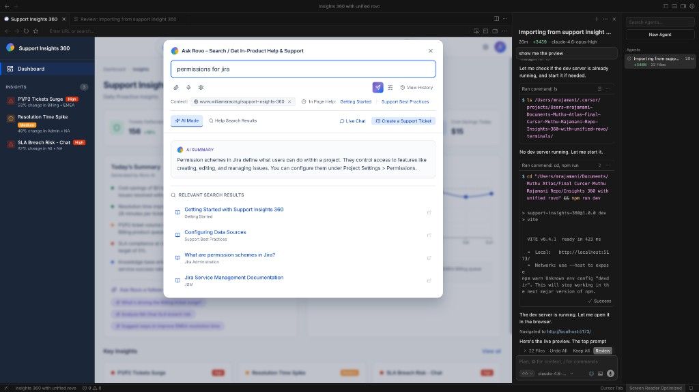
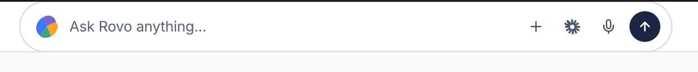
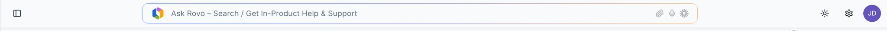
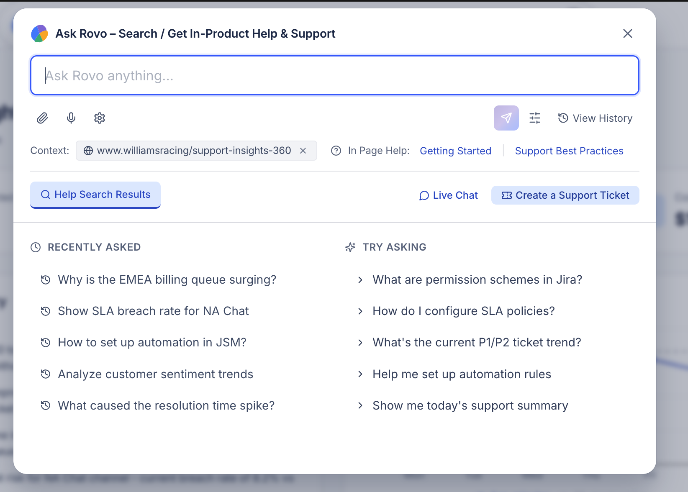
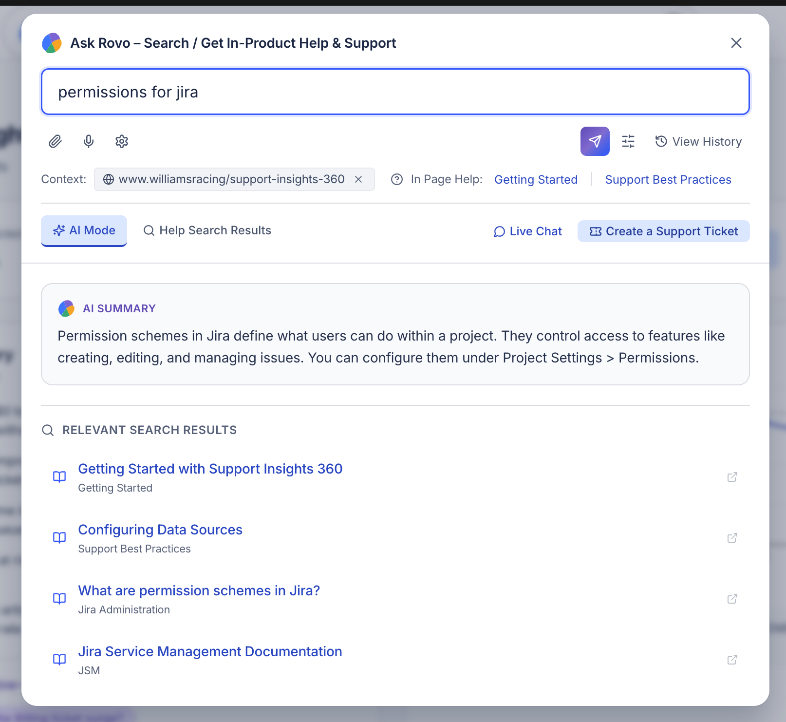
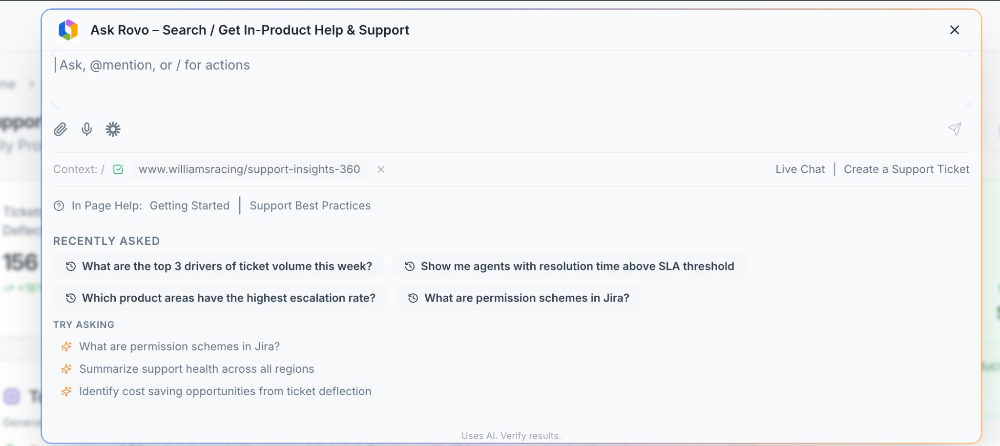

Replacing Fragmented Support with a Unified, AI-First Omni-Box Powered by Rovo
| Author | Muthukumar Rajamani |
| Status | Draft |
| Date | February 18, 2026 |
| Product | Atlassian Customer Help Center / SAC — Rovo Integration |
| Design System | Atlassian Design System (ADS) + Rovo Material Components |
| Reference App | Support Insights 360 Prototype |
| Related Docs |
Reimagine Customer Help Center Strategy Contact Center / Help Desk End-to-End Journey Map |
The current Customer Help Center / SAC at support.atlassian.com is a search-first, fragmented experience that forces customers to navigate multiple disconnected touchpoints to resolve issues.
| Touchpoint | Location | Problem |
|---|---|---|
| In-Page Help | Embedded in product pages | Limited to static links; no AI-powered contextual assistance |
| Ask Rovo Button | Header icon (current) | Opens a slider panel — not prominent, not unified with search |
| Header Search Bar | Header | Shows content search results only; confused with “Contact us” |
| Loom Help | Separate integration | Disconnected from support ticket creation workflow |
| Live Chat | support.atlassian.com | Requires navigating away from product; no product context passed |
| Support Ticket / Contact Form | support.atlassian.com | 3+ hops to reach; no AI deflection before submission |
Customers now expect AI assistance as a default, valuing conversational help that: understands intent in natural language, guides with clear step-by-step answers, and surfaces only the most relevant content instead of “piles of documents.”
Without a shift from search-first to AI-first, the Help Center will lag customer expectations and miss the opportunity to: increase self-help engagement, reduce unnecessary Contact App traffic, and build a consistent, reusable AI Help Center that can power multiple domains across Atlassian via CSM and Rovo.
By making Rovo / AI the primary, unified entry point via a single omni-box on the header — where users can search content with AI summaries, get support help, access live chat, raise support tickets, record Loom videos for context, see page-level help, and interact with suggested prompts — we will:
All omni-box flows in this PRD are demonstrated from the Support Insights 360 dashboard page as the starter context.

| Attribute | How It Anchors the Omni-Box |
|---|---|
| Data-rich environment | Real-time KPIs (Tickets Deflected: 156, Avg Resolution Time: 28m, Open Tickets: 2, SLA Breach Risk: 8.2%), cost avoidance metrics ($2,340), trend charts — creating natural scenarios for every flow |
| Pre-existing AI integration | Rovo-generated “Today’s Summary” with embedded follow-up prompts makes the AI-first paradigm tangible |
| Contextual help scenarios | Page URL (www.williamsracing/support-insights-360) auto-populates the context chip; In-Page Help links (“Getting Started,” “Support Best Practices”) are contextual |
| Insight-driven prompts | “Ask Rovo a follow-up” generates questions from page data (e.g., “What’s driving the Billing ticket surge?”) |
| Proactive trigger scenarios | Left sidebar: P1/P2 Tickets Surge high, Resolution Time Spike medium, SLA Breach Risk high |
A multi-state component that serves as the single entry point for all support interactions, living in the application header.
“Ask Rovo – Search / Get In-Product Help & Support” text field with action icons (attach, mic, sparkle/AI). Always visible in the header. Clicking or focusing on it triggers the expanded popup.


Triggered on click/focus of the header field. The popup overlay contains all support touchpoints in one place.

| Element | Description |
|---|---|
| Prompt Input | “Ask Rovo anything…” free-text input with Rovo Material prompt-box styling |
| Toolbar | Attach file, Mic (voice input), AI Settings, Send button, Filter, View History |
| Context Bar | Auto-detected page URL chip (www.williamsracing/support-insights-360) × dismissible + In-Page Help links |
| Action Row | Help Search Results · Live Chat · Create a Support Ticket |
| Recently Asked | Personalized history of recent questions (e.g., “Why is the EMEA billing queue surging?”) |
| Try Asking | Contextual suggested prompts based on page data and user role |
| Disclaimer | “Uses AI. Verify results.” |
When the user types a query, the popup transforms to display AI-summarized answers and matching search results.

| Element | Description |
|---|---|
| Toggle Tabs | AI Mode (active) · Help Search Results — user can switch between AI-summarized view and traditional search |
| AI Summary Card | Rovo icon + structured answer (e.g., “Permission schemes in Jira define what users can do within a project…”) |
| Relevant Search Results | List of matching articles with title, category, and external link icon. Clicking navigates to the content page. |
When the user clicks a suggested prompt or engages in deeper conversation, a right-side panel opens for a full conversational experience. As seen in the reference prototype.
| Element | Description |
|---|---|
| Chat Bubble | User question displayed as a sent message |
| Rich AI Response | Summary text, data visualizations (bar charts, trend lines), Key Findings bullet list, Recommendations |
| Response Actions | Thumbs up, thumbs down, copy, refresh buttons |
| Follow-up Chips | “Try following up with:” contextual suggestion chips (e.g., “Create a bar chart comparing these drivers over time”) |
| Free-text Input | “Ask, @mention, or / for actions” with Send button |
| Escalation Link | “Create a ticket instead” to escalate when AI cannot resolve |
Rovo-generated content embedded directly in dashboard pages. The Support Insights 360 page features “Today’s Summary” with AI insights and “Ask Rovo a follow-up” prompts woven into the page content. Clicking a follow-up opens the Rovo side panel with context preserved.
Bottom panel “I’m Rovo. How can I help?” with quick-action category buttons for intent pre-classification:
Billing issue Account access Product setup Technical problem
Clicking a category pre-classifies intent and routes to the appropriate help path, reducing time to resolution.

All flows originate from the unified omni-box on the Support Insights 360 starter page. Each flow describes the user journey, UI state transitions, and expected outcome.
User types a query in the omni-box → Popup transforms to State 3 (Search Results with AI Summary) → AI Summary card appears at top with Rovo icon and structured answer → Relevant Search Results listed below → Clicking a result navigates to the content page.
Example: User types “permissions for jira” → AI Summary: “Permission schemes in Jira define what users can do within a project. They control access to features like creating, editing, and managing issues. You can configure them under Project Settings > Permissions.” → Results: Getting Started with Support Insights 360, Configuring Data Sources, What are permission schemes in Jira?, Jira Service Management Documentation.
Reference: Mock 4
Omni-box popup displays contextual In-Page Help links based on the current page URL. The page URL (www.williamsracing/support-insights-360) is auto-detected and shown as a dismissible chip in the context bar.
Links shown: “Getting Started” | “Support Best Practices” — contextual to the Support Insights 360 dashboard.
Clicking an In-Page Help link opens the relevant help article in a new tab or inline preview.
User clicks “Create a Support Ticket” in the action row → Ticket creation form appears with an option to “Record a Loom” → Loom SDK integration opens the recorder (screen + camera) → User records the issue contextually while on the Support Insights 360 page → Recording attaches to the new support ticket form → Ticket submitted with video context, page URL, and any prior Rovo conversation as background.
Integration: Loom SDK (existing product integration, not native browser recording).
User clicks “Live Chat” in the action row → Rovo AI greets and classifies intent → AI attempts autonomous resolution (FAQ answers, account actions, guided steps) → If unresolved, handoff to human agent with full transcript, page context, and user metadata.
Page URL chip is included. Agent sees the user was on Support Insights 360, viewing SLA breach data.
User dismisses the context chip before initiating chat. Agent receives conversation only.
During queue wait: show estimated wait time, offer callback option, suggest “While you wait, try asking Rovo…”
User clicks a suggested prompt from “Try Asking” (e.g., “What are permission schemes in Jira?”) → Rovo side panel opens (State 4) → Conversational AI session begins with that prompt pre-filled → Rich AI response with summary, visualizations, and follow-up suggestions.
User sees their recent questions in the “Recently Asked” section (e.g., “Why is the EMEA billing queue surging?”, “Show SLA breach rate for NA Chat”) → Clicking one re-executes the query in the omni-box.
If a previous live chat was in progress, user can resume the conversation asynchronously (persistent chat). The conversation thread is preserved across sessions.
AI cannot resolve the user’s issue → User is offered “Talk to an Agent” → Full conversation transcript + page context (Support Insights 360 URL) + Loom video (if recorded) + CRM profile auto-attached → Personalized AI routing selects best-fit agent based on intent, sentiment, skill match, and customer priority → Agent receives screen pop with all context. Zero re-explanation needed.
During live chat, user or agent can escalate to voice or video call without losing context. Full chat transcript, page context, and attached media carry over seamlessly. User does not need to repeat any information.
The omni-box proactively surfaces known issues, outages, or incidents contextually before the user even asks. Inspired by Intercom Fin proactive triggers, ServiceNow Predictive Intelligence, and Statuspage integration.
Statuspage detects an ongoing incident affecting Jira Cloud in the user’s region → Omni-box header shows a warning badge/indicator → On open, a prominent alert banner appears: “We detected an ongoing incident affecting Jira Cloud in EMEA. Status: Investigating. ETA: ~30 min.” with a link to the Statuspage incident → User can dismiss, subscribe to updates, or ask Rovo “Is this affecting my project?”
Rovo detects that the SLA Breach Risk on the current page has exceeded the 5% target (currently 8.2%) for the third consecutive day → Omni-box proactively shows: “SLA breach rate at 8.2% — exceeding your 5% target for 3 days. Want me to analyze root causes?” → Clicking opens the Rovo side panel with pre-filled analysis.
Maps to the left sidebar alerts: P1/P2 Tickets Surge · high Resolution Time Spike · medium SLA Breach Risk · high
User has been on the Support Insights 360 page for >3 minutes without interaction → Omni-box subtly pulses or shows a helper tooltip: “Need help understanding this dashboard? Try: ‘What are the top 3 drivers of ticket volume this week?’”
User has attempted the same action 3+ times (e.g., filter configuration failing) → Omni-box proactively suggests: “Having trouble with filters? Here’s a guide: Configuring Data Sources” with a direct link.
Backend ML model identifies the user as at-risk (decreased usage, multiple unresolved tickets, low CSAT) → Omni-box shows: “We noticed you’ve had a few open issues. Would you like to connect with a dedicated support specialist?” → Clicking opens Live Chat with priority routing.
User requests an action in the omni-box (e.g., “reset my API token”, “check my instance health”, “clear cache”) → Rovo executes the action autonomously via backend APIs → Confirmation shown in the omni-box. No agent involvement needed.
After resolution (AI or human), a CSAT/NPS micro-survey appears inline in the omni-box. Thumbs up/down on AI answers with “Not helpful? Tell us why” → Feedback feeds into AI model retraining and content gap detection. If marked unhelpful, auto-escalates to human agent.
User can view and track status of all open support tickets directly from the omni-box without navigating to support.atlassian.com. Inspired by Salesforce Case Portal and ServiceNow My Requests.
User clicks “View History” in the omni-box toolbar → “My Cases” panel shows a list of open tickets with: ticket ID, subject, status (Open / In Progress / Waiting on Customer / Resolved), priority badge, assigned agent name, last updated timestamp, SLA countdown if applicable. Sorted by most recent activity.
User clicks a specific ticket → Expanded view shows full case timeline: original submission (including Loom video if attached), agent responses, AI-generated summary of the conversation so far. User can: add a comment/reply, attach a new file or Loom recording, escalate priority, or mark as resolved.
User sees a recently resolved ticket → Clicks “Reopen” → Adds context on why the issue recurred → Case is re-opened and routed back to the same agent (affinity routing) with full history preserved.
When a tracked case gets an update (agent replied, status changed, resolved), a notification badge appears on the omni-box header → Opening the omni-box shows the notification inline: “Your ticket #12345 ‘Billing discrepancy’ has been updated — Agent replied 5 min ago” → Clicking navigates to the case detail view.
From the case tracker view, user can click “Create a Support Ticket” to start a new case → Form pre-populates with page context (Support Insights 360 URL) and any recent Rovo conversation history as background context.
User asks a data-oriented question (e.g., “What’s driving the Billing ticket surge?”) → Rovo side panel opens → AI responds with structured content: Summary paragraph, data visualization (bar chart showing ticket distribution by category), Key Findings bullet list, Recommendations as actionable items → User interacts via thumbs up/down, copy, or refresh → “Try following up with:” shows contextual next questions.
Reference: Live prototype Rovo side panel
User opens Rovo help → Sees “I’m Rovo. How can I help?” with quick category buttons (Billing issue Account access Product setup Technical problem) → Clicking a category pre-classifies intent and starts a targeted conversation or routes to the appropriate help path.
Reference: Live prototype bottom panel
On the Support Insights 360 dashboard, Rovo generates “Today’s Summary” with AI-powered insights. Below the summary, “Ask Rovo a follow-up” prompts appear contextual to the page data (e.g., “What’s driving the Billing ticket surge?”, “Analyze NA Chat SLA breach risk”). Clicking a follow-up prompt opens the Rovo side panel with that question pre-filled, maintaining full page context.
| Scenario | Handling |
|---|---|
| No search results found | Show “No results found. Try rephrasing your question or contact support.” Offer Live Chat and Create Ticket buttons. |
| AI summary generation fails / times out | Fall back to traditional search results. Show subtle error: “AI summary unavailable. Here are matching articles.” |
| Loom SDK fails to initialize or user denies screen permissions | Show error message with manual file upload fallback. “Unable to start recording. You can attach a file instead.” |
| Live chat agents unavailable (all busy) | Show estimated wait time, offer callback option, suggest Rovo AI for immediate help. |
| Page context cannot be detected (generic pages) | Context chip shows “No page context detected” with option to manually enter URL. |
| User is unauthenticated | Show login prompt before allowing AI search, ticket creation, or live chat. Read-only KB results still accessible. |
| Network connectivity issues mid-flow | Queue messages locally, retry on reconnect. Show “Connection lost. We’ll retry when you’re back online.” |
| Channel switch fails (voice/video unavailable) | Show “Voice/video not available in your environment. Continue via chat.” |
| Self-service action fails or requires elevated permissions | Show clear error: “This action requires admin permissions. Would you like to request access?” |
| AI misroutes to wrong agent skill group | Agent can re-route with one click. Customer sees “Connecting you to the right specialist…” |
| Multilingual detection fails | Default to English with language selector for manual override. |
| Proactive trigger fires at inappropriate time | Trigger has a cooldown period (no re-trigger for 30 min). User can dismiss and suppress for session. |
| Persistent conversation data expired | Show “Previous conversation no longer available. Start a new one?” |
| CRM / context lookup times out during routing | Route to general queue with graceful degradation. Agent can pull context manually. |
| Concurrent session limit reached for agent | Customer stays in queue with updated wait time. Offer callback or AI deflection. |
| Category | ADS Requirement |
|---|---|
| Typography | ADS type scale: font families, sizes, weights, line heights |
| Color | ADS color tokens for surfaces, text, borders, interactive states. Dark mode support required. |
| Spacing | ADS spacing scale (4px grid system) |
| Iconography | ADS icon set (Atlassian icons) for all UI elements |
| Elevation | ADS elevation tokens for popup container shadow/overlay |
| Interactive States | ADS patterns for hover, focus, active, disabled states |
| Accessibility | WCAG 2.1 AA compliance, full keyboard navigation, screen reader support |
| Motion | ADS motion tokens for popup open/close transitions, loading states |
| Omni-Box Element | Rovo Material Reference |
|---|---|
| Prompt Input | Rovo Material prompt-box — foundational design for the text input |
| Rovo Branding | Rovo icon/avatar next to AI-generated content (AI Summary, suggested prompts) |
| Toolbar Actions | Attach, mic, AI settings, send — aligned with Rovo Material interaction patterns |
| Popup Container | Card styles, result list patterns follow Rovo Material conventions |
| Side Panel Chat | Chat bubbles, rich responses, follow-up chips per Rovo Material |
The live prototype at support-insight-360-and-front-and-center-unified-rovo.replit.app serves as the working reference implementation. Key patterns to replicate:
| Area | Details |
|---|---|
| Frontend | Built on ADS component library (@atlaskit packages) with Rovo Material prompt-box as the core input component |
| Rovo AI Backend | Summarization, search (RAG), intent & sentiment classification, autonomous actions, conversation memory |
| Personalized AI Routing | Customer context ingestion (CRM, history, sentiment, LTV), skill-based matching, predictive load balancing, affinity routing |
| Loom SDK | Embed recorder, video upload, attachment to ticket |
| CSM Integration | Live chat routing, agent desktop, warm transfer, concurrent sessions |
| Omnichannel | Chat → voice → video channel switching; WhatsApp/SMS/email continuity; persistent conversation storage |
| Page Context Detection | URL parsing, page metadata, product/plan detection for personalized help |
| Search Index | Cross-product content, KB articles, Atlassian Community posts |
| Self-Service Action APIs | Backend endpoints for autonomous actions (token reset, instance health, cache clear) |
| Statuspage Integration | Real-time incident data feed for proactive alerts |
| Multilingual | Language detection, translation APIs for AI summaries and chat |
| Analytics | Full event tracking aligned with reporting categories (CX, AI, engagement, business) |
| Performance Targets | Popup render < 200ms, AI response < 2s, routing decision < 500ms |
| Design Token Mapping | Document ADS tokens for each component state (default, hover, focus, active, error) |
Omni-box with AI search + summary + help search results + in-page help + recently asked + suggested prompts + AI answer feedback (thumbs up/down)
Flows: A, B, E, F, K, O
Live chat with bot-first deflection + support ticket creation + Loom recording integration + Rovo side panel + open case tracker
Flows: C, D, L, M, N
AI-to-agent handoff with full context + personalized AI routing + channel switching (chat → voice → video) + persistent conversations + community answers in results
Flows: G, H
Proactive help triggers (dwell time, incidents, churn) + self-service actions + Statuspage integration + knowledge gap detection + multi-session conversation memory
Flows: I, J
Multilingual auto-detection + real-time translation + advanced reporting dashboards + competitive parity features
Expansion
Features drawn from leading CCaaS and AI-native competitors that the omni-box should incorporate or plan for.
| Feature | Description | Inspired By | Omni-Box Phase |
|---|---|---|---|
| Proactive / Predictive Alerts | Surface known issues, outages, or incidents contextually before the user asks | Intercom Fin, ServiceNow, Statuspage | Phase 4 |
| Guided Troubleshooting Flows | Interactive step-by-step decision trees for common issues | Zendesk Guide, Freshdesk, Apple Support | Phase 5 |
| Self-Service Actions | Perform actions directly: reset API token, check instance health, change settings | Intercom Fin Actions, ServiceNow Virtual Agent | Phase 4 |
| Seamless AI-to-Agent Handoff | Escalate with full transcript, page context, Loom video, CRM profile — zero re-explanation | Intercom Fin → Human, Zendesk Answer Bot | Phase 3 |
| Community / Peer Answers | Show Atlassian Community posts alongside official docs in search results | Zendesk Gather, Salesforce Community Cloud | Phase 3 |
| Open Case Tracker | View/track open tickets directly from omni-box | Salesforce Case Portal, ServiceNow My Requests | Phase 2 |
| AI Answer Feedback Loop | Thumbs up/down → model improvement + auto-escalation if unhelpful | Intercom Fin, ChatGPT, Perplexity | Phase 1 |
| Multilingual Auto-Detection | Detect language and serve content in user’s language | Zendesk multilingual, Intercom Fin, Genesys | Phase 5 |
| Knowledge Gap Detection | Auto-flag unanswerable queries for content team | Zendesk Content Cues, Salesforce Knowledge | Phase 4 |
| Multi-Session Conversation Memory | Rovo remembers past interactions across sessions | Intercom Fin, ChatGPT memory, NICE Enlighten | Phase 4 |
| Capability | Cisco Webex CC | Talkdesk | Genesys Cloud | NICE CXone | Five9 | AI-Native (Fin, Sierra) | Rovo Omni-Box |
|---|---|---|---|---|---|---|---|
| AI routing | Emerging | Yes | Yes (ML) | Enlighten | Genius AI | LLM-native | Yes + product context |
| Omnichannel chat | Basic | Rich | Web messaging | 30+ channels | Chat + IVA | Chat-first | Unified entry point |
| AI virtual agent | AI Asst | Autopilot | Bot flows | Autopilot | IVA | Core product | Rovo (RAG + actions) |
| Agent copilot | Answers | Copilot | Agent Assist | Copilot | Genius | Cresta, Level AI | Rovo Copilot |
| Proactive chat | Limited | Yes | Journey-based | Yes | Basic | Behavioral | Context + incident-aware |
| In-product help fusion | No | No | No | No | No | Partial | Yes (page-level help) |
| Loom / video context | No | No | No | No | No | No | Yes (Loom SDK) |
| Auto-summarize | Yes | Yes | Yes | Enlighten | Yes | Native LLM | Rovo (w/ data viz) |
Alignment with the Contact Center / Help Desk End-to-End Journey Map.
| Mode | Description | Omni-Box Role |
|---|---|---|
| Autonomous | Resolves without human: FAQ via RAG, password/account resets, order/license status, form-filling | Omni-box is the primary surface for autonomous resolution (Flows A, J, N) |
| Copilot | Assists human agent: auto-draft replies, suggest KB articles, surface customer history, next-best-action | Omni-box context (page URL, conversation history) feeds the copilot on agent side (Flow G) |
| Behind the Scenes | Intent/sentiment classification, AI routing, predictive load balancing, auto-QA, analytics | All queries entering the omni-box are classified before routing (Flows D, G, I) |
| Capability | Description |
|---|---|
| Bot-first deflection | AI chatbot handles FAQs, collects context, hands off to live agent with full transcript |
| Proactive chat triggers | Trigger omni-box based on page dwell time, repeated errors, return visits, AI-predicted churn risk |
| Concurrent sessions | Agents handle 3–5+ chats simultaneously with AI-suggested responses |
| Rich media | File sharing, screen sharing, co-browse, video escalation, embedded forms |
| Seamless channel switch | Chat → voice → video without losing context; continue on WhatsApp/SMS/email |
| Persistent conversations | Customer returns and picks up where they left off (async) |
| Unified inbox | All channels converge into single thread per customer |
| Step | Journey Map | Omni-Box Mapping |
|---|---|---|
| C1 | Discover & self-serve | AI search + summary + KB results (Flow A) |
| C2 | Choose channel | Action row: Help Search | Live Chat | Support Ticket |
| C3 | Initial contact | Rovo AI greets, identifies intent, collects context from page URL |
| C4 | AI deflection attempt | Rovo tries autonomous resolution before offering agent (Flow D) |
| C5 | Queue & wait | Estimated wait time, callback option within omni-box |
| C6 | Interact with agent | Live chat from omni-box with full context pre-loaded (Flow D) |
| C7 | Channel switch | Chat → voice/video without repeating context (Flow H) |
| C8 | Resolution | Confirmation in omni-box; case closed notification (Flow L.4) |
| C9 | Post-interaction | CSAT/NPS micro-survey within omni-box (Flow K) |
| C10 | Follow-up & continuity | Reopen ticket or persistent chat; affinity routing (Flows F, L.3) |
| # | Question | Status |
|---|---|---|
| Q1 | What is the latency SLA for Rovo AI summarization in production at scale? Current target is <2s. | Open |
| Q2 | How will the omni-box handle multi-tenant environments where page context varies by customer instance? | Open |
| Q3 | What is the Loom SDK licensing model for embedding the recorder in the omni-box across all Atlassian products? | Open |
| Q4 | How will personalized AI routing integrate with existing CSM queue infrastructure? | Open |
| Q5 | What data retention policies apply to persistent conversation history and conversation memory? | Open |
| Q6 | How will the omni-box be deployed across different Atlassian products (Jira, Confluence, JSM, Admin Hub) — shared component or per-product build? | Open |
| Q7 | What are the guardrails and safety mechanisms for self-service actions to prevent unintended changes? | Open |
| Q8 | How does the omni-box interact with existing Rovo Chat and help widgets — replacement or coexistence during migration? | Open |
| Risk | Impact | Mitigation |
|---|---|---|
| AI hallucination in summaries | High | RAG grounding with verified KB sources; “Uses AI. Verify results.” disclaimer; feedback loop for flagging inaccurate answers |
| Latency degradation under load | High | Performance budgets (render <200ms, AI <2s); graceful fallback to traditional search; CDN caching for static help content |
| User adoption resistance | Medium | Gradual rollout; A/B testing; keep traditional search accessible alongside AI mode; user education |
| Privacy / data concerns with page context sharing | Medium | Dismissible context chip; clear privacy controls; no sensitive data auto-included; GDPR/SOC2 compliance |
| Scope creep across 5 phases | Medium | Clear phase gates; MVP-first approach; each phase delivers standalone value before the next begins |
| Cross-team dependency (Rovo, CSM, Loom, Statuspage, ADS) | Medium | Early stakeholder alignment; shared API contracts; modular architecture allowing independent deployment |
PRD v1.0 — Draft — February 18, 2026 — Muthukumar Rajamani
Powered by Rovo & Atlassian Design System